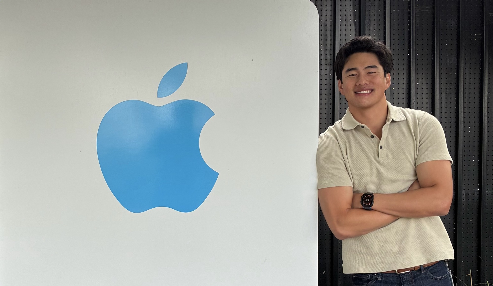
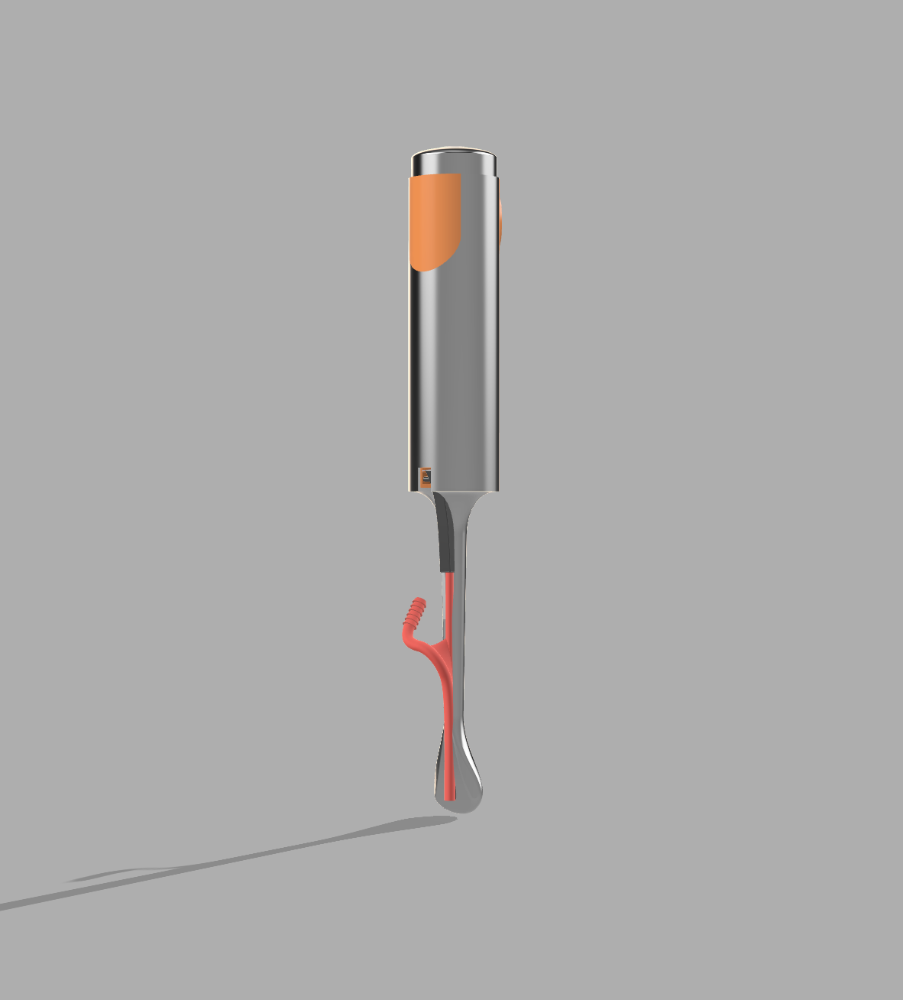
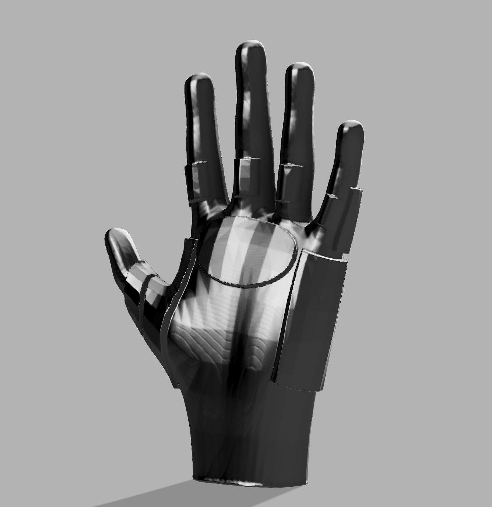
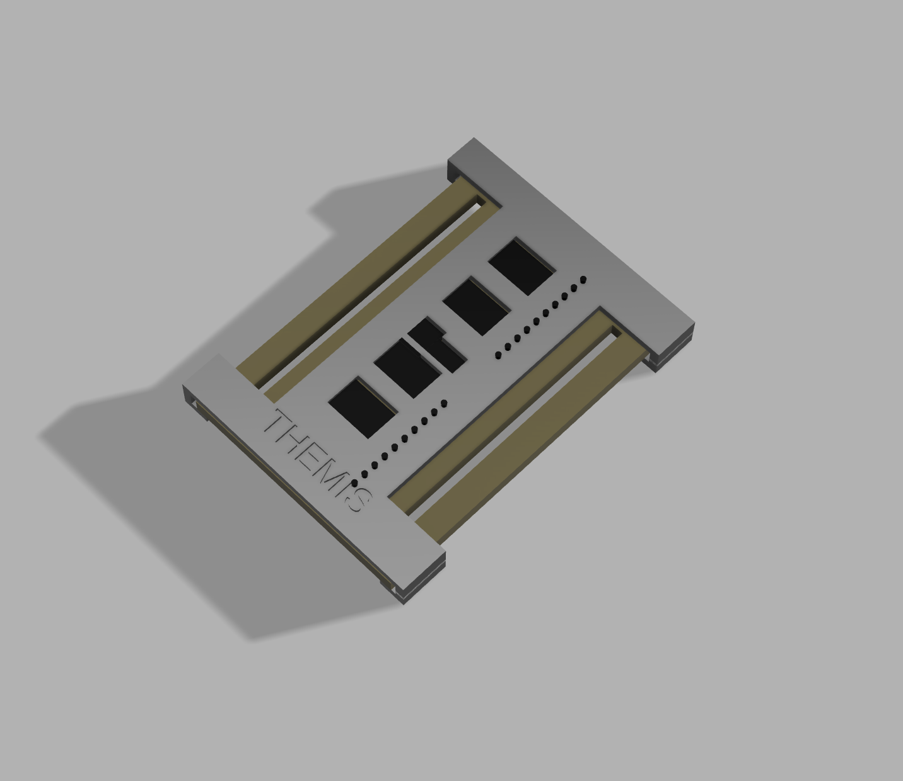
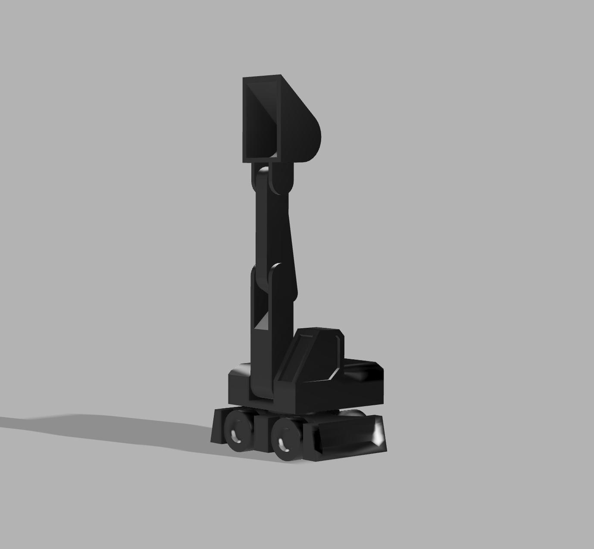
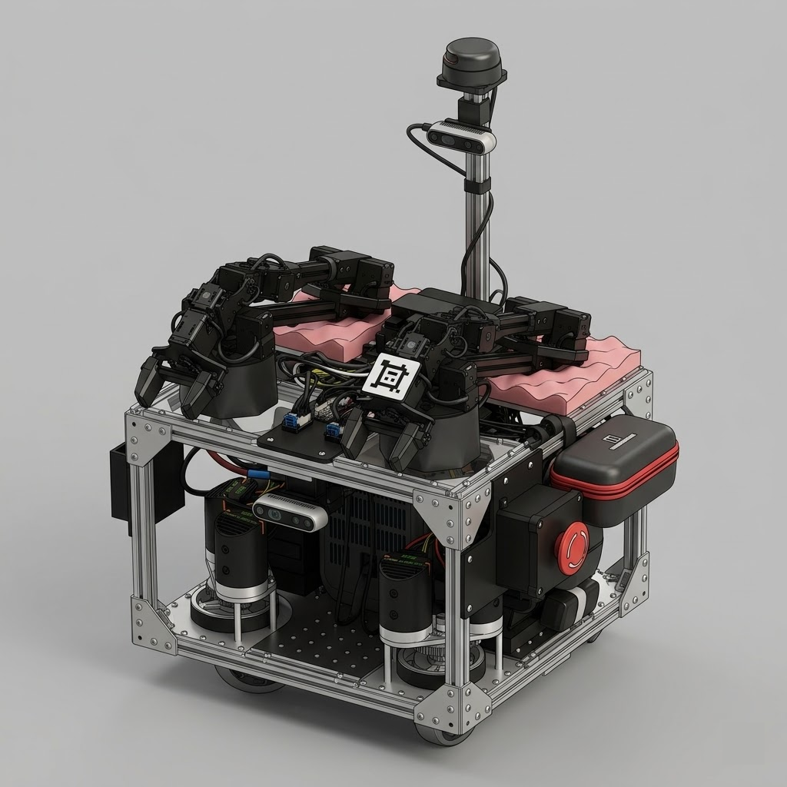
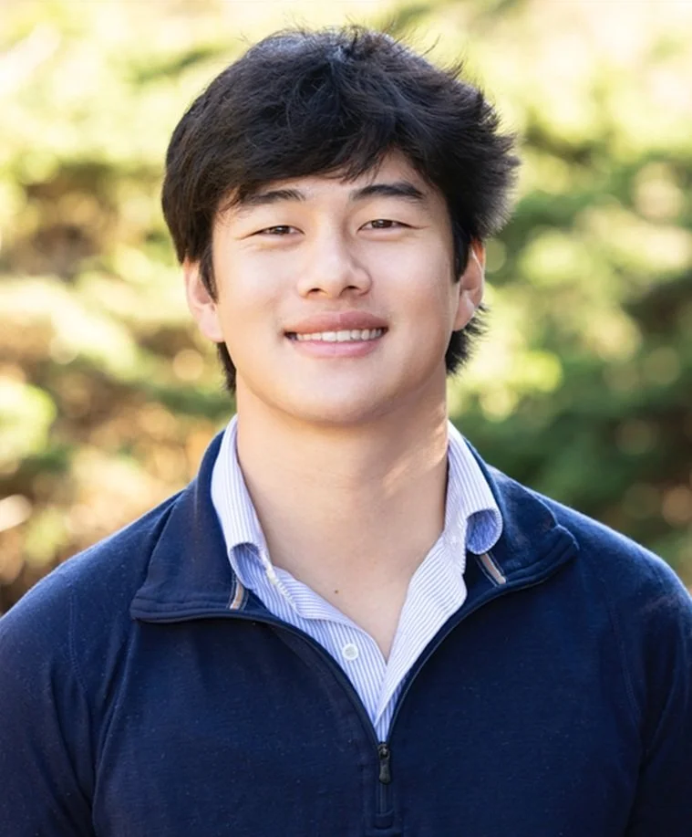

VacuTrac Surgical LLC

Retractor Discomfort Remedy

Wearable Medical Devices

Human-Centered Engineering

S.E.A.L. Team 6

First-year MS student in Mechanical Engineering at Stanford, specializing in robotics. At Rice I co-invented VacuTrac, a patent-pending surgical device integrating tissue retraction and suction for spinal surgery, earning recognition as a 2025 National Inventors Hall of Fame Collegiate Inventors Competition Finalist, Shapiro Showcase 1st Place, and VentureWell DEBUT Honorable Mention. Before Stanford I spent half the summer at Carbon Robotics releasing vendor-ready CAD packages and writing assembly SOPs for production builds, and the other half designing airframe subassemblies and running CFD at a stealth eVTOL startup. This spring I'm joining Apple as a Product Design Intern on the Beats team. My work sits at the intersection of surgical innovation, precision hardware, and autonomous systems; wherever careful mechanical thinking produces something that genuinely works better.